Lesson 1 Part 1 – Getting Started
Contents
Lesson 1 Part 1 – Getting Started#
Overview#
This lesson will outline the process of setting up a FLO-2D project using the Plugin for QGIS. Setting up the computational domain, creating a grid, interpolating elevation data and spatially variable roughness.
Step by step instructions are below and this video will add detail to the lesson.
Required Data#
The lesson makes use of terrain elevation data, project domain, roughness data, and an inflow hydrograph in the Lesson 1 folders.
File |
Content |
Location |
Elevation.tif |
Digital terrain raster |
QGIS Lesson 1 |
Project Domain.shp |
Polygon for project domain |
|
Mannings n.shp |
Shapefile for spatially variable roughness |
|
GroverBasinInflow24hr 100yr.txt |
Inflow data file |
Project Location C:\Users\Public\Documents\FLO-2D PRO Documentation\Example Projects\QGIS Tutorials
Check these folders to ensure the data is available before starting the lesson.
Step 1: Open QGIS#

Search the start menu and run the QGIS Desktop program. Look for QGIS version 3.22 or higher.
Click the New Project icon to load a new map.
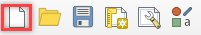
Step 2: Import the project domain#
Open the project folder
Drag the file Project Domain.shp onto the map space. This will set the CRS to the correct EPSG code.
C:\Users\Public\Documents\FLO-2D PRO Documentation\Example Projects\QGIS Tutorials\QGIS Lesson 1\Project domain.shp
Note
If the image is not clear, use Firefox browser or open the image in a new tab.
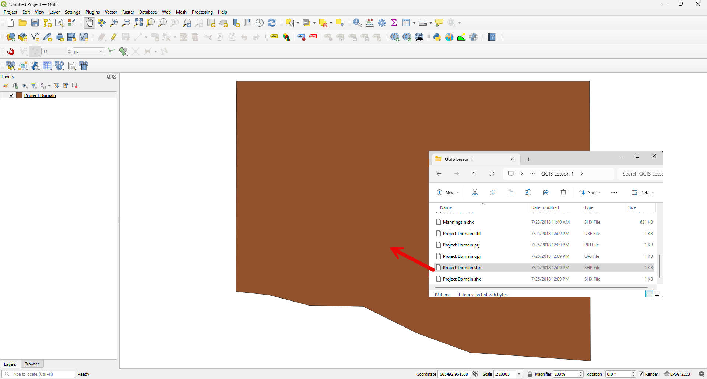
Step 3: Set up the FLO-2D project#
Click the Set-up icon fill out the dialog box as shown below. Set the Grid cell size to 30 ft.
Click Create.
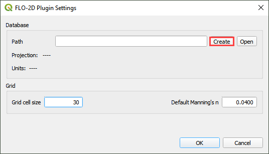
Save the geopackage file to the project folder.
Name the file Lesson 1.gpkg.
C:\Users\Public\Documents\FLO-2D PRO Documentation\Example Projects\QGIS Tutorials\QGIS Lesson 1\Lesson 1.gpkg
Set the project CRS to Arizona Central (ft). Filter the list with an EPSG code: 2223. Select EPSG: 2223 and click OK.
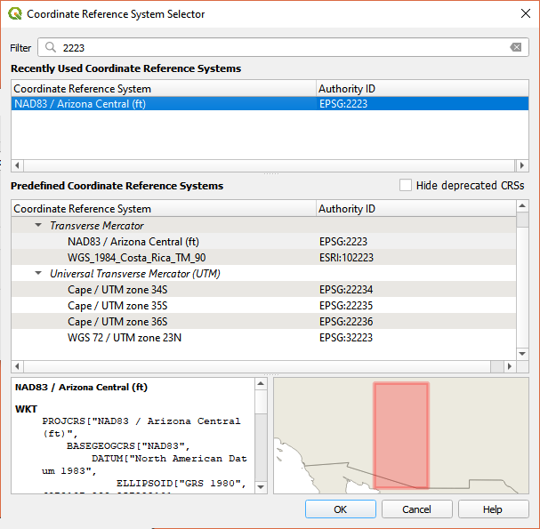
Wait for the geopackage to write and check the accuracy of the project settings and click OK.
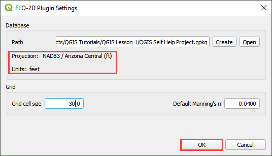
Step 4: Create the grid#
From the Grid Tools widget, select Create Grid.
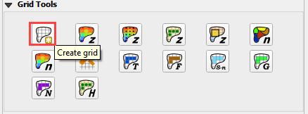
Select the Project Domain layer, and the Cell Size field and click OK.
Note
If a shapefile is not available, digitize the project domain in the Computational Domain Layer. In order to align the grid to a raster, load the raster file into the dialog box.
C:\Users\Public\Documents\FLO-2D PRO Documentation\Example Projects\QGIS Tutorials\QGIS Lesson 1\Elevation.tif
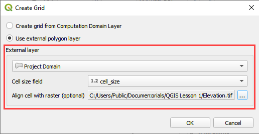
Click OK to close. The grid is complete.
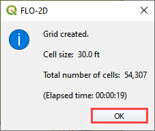
Step 5: Save the project#
Click the main Save icon on the QGIS toolbar.

Navigate to the Lesson folder, name the project Lesson 1.qgz and click Save.
C:\Users\Public\Documents\FLO-2D PRO Documentation\Example Projects\QGIS Tutorials\QGIS Lesson 1\Lesson 1.qgz
Step 6: Assign grid elevation#
Import the elevation file. Open the project folder and drag the Elevation.tif file onto the map space.
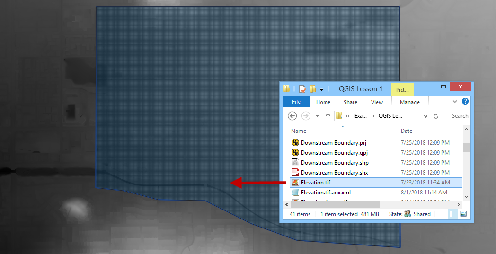
To interpolate the elevation to a grid layer from a raster layer, use the Sample Grid Elevation icon.
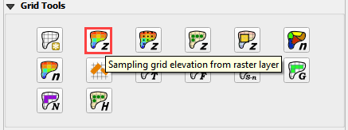
Click on the Sample Grid Elevation icon and enter the required data in the dialog fields and click OK.
Sampling Done dialog box will appear once the process is complete. Click OK to close it.
Note
Use the Fill NoData option if the elevation raster is missing data such as buildings. This method uses the GDAL Warp processing tool. To learn more about GDAL Warp, visit this page:
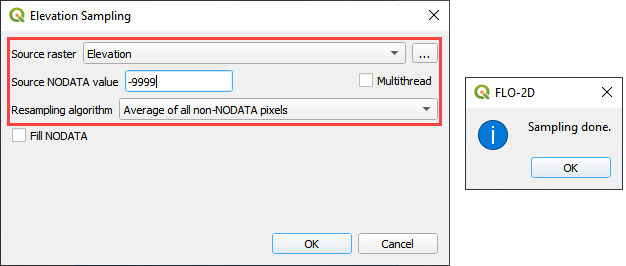
Step 7: Assign Roughness data#
Open the project folder and drag the Mannings n.shp file onto the map space.
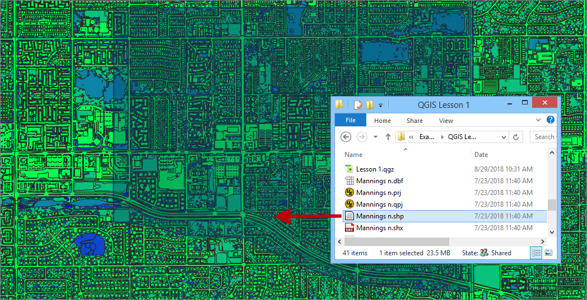
Click the Sample Manning’s icon.
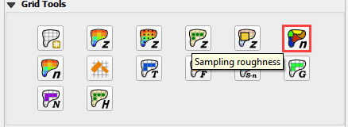
Fill the dialog box and click OK. Once the sample is complete, the following window will appear. Close the window.
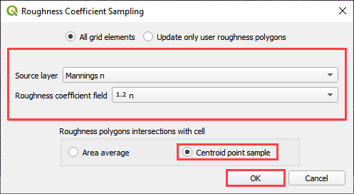
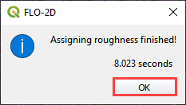
The roughness values and elevations are assigned to the grid layer in the Schematized Layers group. Right click the Grid layer and click Open Attribute Table to see the data.
Note
Don’t open a table for a large project >1 million cells. The data is too large to load without applying filters.
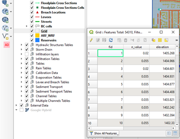
Step 8: Assign Control variables#
Click the Set Control Parameters Icon.

Fill the dialog box using the two figures below. Save the data to the GeoPackage with the Save icon.
Note
The variable descriptions and additional instructions are presented in the Data Input Manual.
C:\Users\Public\Documents\FLO-2D PRO Documentation\flo_help\Manuals\Data Input Manual PRO.pdf
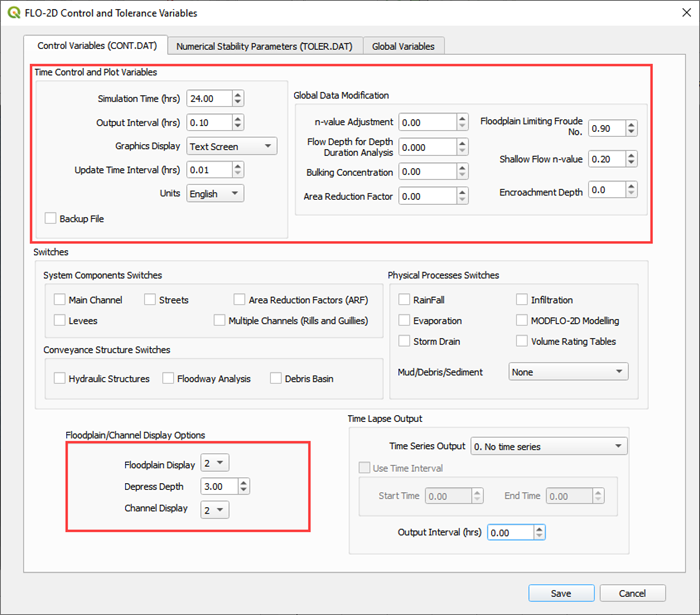
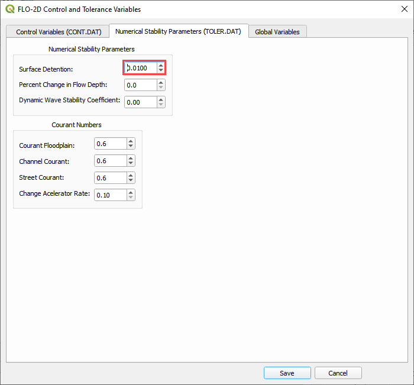
Step 9: Save the project#
Click the main Save icon on the QGIS toolbar.
Step 10: Export the FLO-2D data files#
Click the FLO-2D Data Export icon.

Uncheck Rain and Click OK
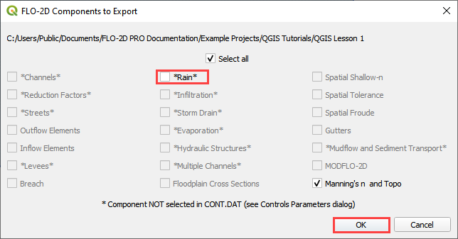
Navigate to the project folder and click Select Folder.
C:\Users\Public\Documents\FLO-2D PRO Documentation\Example Projects\QGIS Tutorials\QGIS Lesson 1\QGIS Lesson 1 Export
Once the project is exported click OK to close the export message.
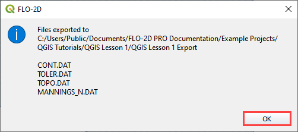
Step 11: Run the simulation#
Click on the Run FLO-2D icon.
Set the FLO-2D Pro folder. C:\Program Files (x86)\FLO-2D Pro
Set the Project folder. C:\Users\Public\Documents\FLO-2D PRO Documentation\Example Projects\QGIS Tutorials\QGIS Lesson 1\Lesson 1 Export Folder
Click OK to Run the simulation.